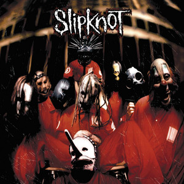

I push my fingers into my eyes
It's the only thing that slowly stops the ache
But it's made of all the things I have to take
Jesus, it never ends, it works its way inside
If the pain goes on, oh
I have screamed until my veins collapsed
I waited as my time's elapsed
Now all I do is live with so much fate
I've wished for this, I've bitched at that
I've left behind this little fact
You cannot kill what you did not create
I've gotta say what I've gotta say
And then I swear I'll go away
But I can't promise you'll enjoy the noise
I guess I'll save the best for last
My future seems like one big past
You're left with me 'cause you left me no choice
I push my fingers into my eyes
It's the only thing that slowly stops the ache
If the pain goes on, I'm not gonna make it
Put me back together or separate the skin from bone
Leave me all the pieces
Then you can leave me alone
Tell me the reality is better than the dream
But I found out the hard way
Nothing is what it seems!
I push my fingers into my
It's the only thing that slowly stops the ache
But it's made of all the things I have to take
Jesus, it never ends, it works its way inside
If the pain goes on, I'm not gonna make it
All I've got
All I've got is wonderful
All I've got
All I've got is wonderful(x3)
I push my fingers into my eyes
It's the only thing that slowly stops the ache
But it's made of all the things I have to take
Jesus, it never ends, it works its way inside
If the pain goes on, I'm not gonna make it
All I've got
All I've got is wonderful
All I've got
All I've got is wonderful(x2)